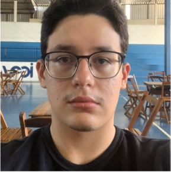

Fundamentos da Cibersegurança e Principais Ameaças — iCEV
Certificação obtida em 2025.

Estudante de Engenharia de Software & Desenvolvedor
Estudante de Engenharia de Software no 3º período da faculdade iCEV, com experiência como estagiário na Plenoenergia Brasil no setor de Engenharia. Desenvolvi habilidades em organização de documentos, conferência de dados, monitoramento de usinas solares e apoio a equipes técnicas. Tenho perfil proativo, organized e colaborativo, com facilidade para aprender rapidamente e contribuir com resultados. Familiaridade com Trello e foco em precisão e eficiência.
Interesses e Objetivos: Tenho grande interesse na área de desenvolvimento de sistemas, engenharia de dados e soluções tecnológicas inovadoras. O meu objetivo académico e profissional é continuar a evoluir as minhas competências técnicas em projetos práticos e desafiantes.
Certificação obtida em 2025.
Maior evento de programação e tecnologia do Piauí e região.
Local: Teresina - PI | Data: 15 e 16 de março de 2025
Participação de 28 a 30 de maio de 2025.

Desenvolvimento de um sistema em Java utilizando listas circulares e manipulações de arquivos.
Ver no GitHub
Projeto focado em Programação Orientada a Objetos para gestão de áreas comuns.
Ver no GitHubSe quiser entrar em contacto comigo ou conhecer mais sobre o meu trabalho, utilize os canais abaixo: